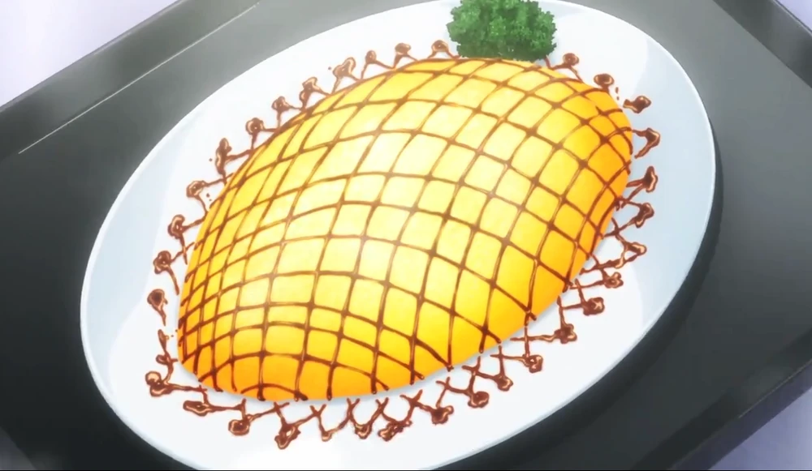
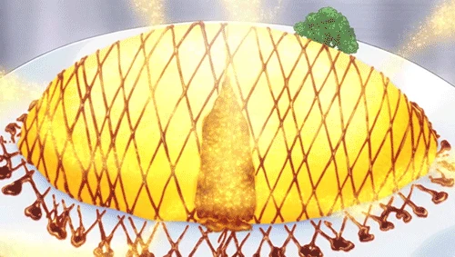

Curry Risotto Omurice


Description
Sōma's dish for the Preliminary Round of the 43rd Annual Tōtsuki Autumn Election. This dish is a fusion of Sōma's past mistakes, combining the Mini Soufflé Omelette, which almost got him expelled during the Tōtsuki Friendship and Rapport Training and his Apple Risotto, which resulted in his 490th loss against his father. Pressing a spoon on it causes an aroma explosion stemming from his usage of Mango Chutney. It is a dish worthy enough to challenge the spice expert Akira Hayama, who was guaranteed to be the top prospect of the preliminaries.
Ingredients
Broth (Preparation ~ 10 min, Cooking ~ 2 hr 30 min)
- 600g Beef
- 600g Chicken
- 1 Onion
- 2 Carrots
- Thyme and Bay leaves
- 3 tbsp Curry Powder
- 1L Water
- 2 Cloves
Mango Chutney (Prep ~ 15 min, Cooking ~ 1 hr)
- 1 Mango
- 1 Apple
- 1 Banana
- 1 Carrot
- 1 Onion
- 1 Garlic Clove
- 7cl Cider Vinegar
- 10cl Water
- 2 tbsp Honey
- 5g Ginger
- 1 tsp Cardamom
- 1 tsp Cumin
- 2 Cloves
Omurice Risotto (Prep ~ 15 min, Cooking ~ 20 min)
- 2 Eggs
- 200g Arborio Rice
- 100g Ground Beef
- 1 Onion
- 40g Butter
- 1L Bouillon (Broth)
- Chicken Bones
- Beef Tendon
- 125g Mango Chutney
Sauce
Garnish
How to Cook
- Peel and chop the carrots and onions into large chunks
- Tie the thyme and bay leaf together with a string
- Place the onions into a hot pot along with cloves
- Add in the curry powder, chicken, and beef
- Cover with water and add the carrots, plus the tied thyme and bay leaf
- Skim the top of the broth for scum. Add water as necessary to keep the ingredients submerged
- Strain the broth, separating the liquids and tossing out the solids
- For the chutney, start by dicing the mango, onion, garlic, carrots, apple, banana.
- Add the chopped onions to a hot pan with oil. While the onions are cooking, add cardamom, cloves, cumin, cloves, and honey.
- Add the chopped vegetables to the pan as well, mixing everything together
- Cover the pan and let cook until the chutney is thick and fragrant
- Create the sauce by combing oyster sauce and honey and mixing together. Optionally, store inside a squeeze bottle to control the amount you use when adding to the dish
- For the omurice risotto, melt the butter in a frying pan
- Add in chopped onions and ground beef.
- Once the beef is cooked through, add the unwashed rice
- Add in the broth a spoonful at a time, making sure the liquid is absorbed by the rice before adding the next one. Repeat till the liter of broth is finished
- Add in the mango chutney and mix
- Crack two eggs in a bowl and whisk
- Add oil to a hot frying pan and pour the eggs to cook at least till the point where the bottom is solid
- Place the curry rissotto ontop of the eggs and fold into an omelette
- Add the sauce and garnish as desired